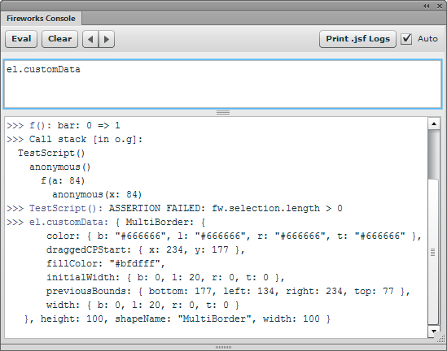

fireworks
Fireworks Console

Fireworks has a dauntingly powerful JavaScript API, and understanding it all can take some time. To try out a new function, you have to write a little command script that uses it, put the script in the Commands folder, run it, tweak it, run it again, etc. I used to find myself writing a lot of commands in the form of alert(Files.getDirectory(dom.filePathForSave)) just to explore the API calls.
The Fireworks Console simplifies the process of learning the JavaScript API considerably. Instead of writing and running an entire command, you can simply type code snippets into a panel and immediately see their output. It's a little like having a command line prompt for Fireworks. You could even ignore the GUI altogether and create your graphics via JavaScript (not that I'd recommend it). Additionally, the console can help you debug your own .jsf commands and Flash panels.
Executing JavaScript
Using the console is straightforward. Type some JavaScript in the upper field, click the Eval button or press enter, and then the code's result is displayed in the lower field. Pretty much any JavaScript is valid, including comments, if-then's, for-loops, etc. If you want to enter a newline rather than execute the statements, press shift-enter. To execute the code while keepping it visible in the input field, press ctrl-enter. You can drag the divider to make the entry field larger.
Be careful not to write code that might return a lot of information, such as evaluating just dom. It may take several seconds to transfer all the data from Fireworks to the Flash panel (if it doesn't hang Fireworks). And don't do something silly like writing an infinite loop...
The output of your JavaScript statements is maintained across Fireworks sessions, and you can copy the text to paste it somewhere else. The output is also saved in a Fireworks Console.txt file in the Command Panels directory. If the output history becomes too long, you can click the Clear button to reset it, which will also delete the log file. If you ctrl-click the Clear button, then the log file is renamed to a time-stamped file, like Fireworks Console 2013-04-06 14.23.42.txt, which lets you keep the output around for further use.
A history of the recently entered statements is maintained so you can go back and re-execute something. To access older statements, click the left-pointing arrow button next to the Clear button. Click the right arrow to display newer statements. When the keyboard focus is in the code area, you can also press ctrl-up-arrow or ctrl-down-arrow to access the previous statements.
Predefined variables and functions
When executing JavaScript, there are several predefined variables that provide quick access to commonly used Fireworks objects:
- dom
- The result of calling
fw.getDocumentDOM(). - sel
- A reference to
fw.selection. - el
- A reference to the first selected element, i.e.,
fw.selection[0]. This makes it a little easier to do things like inspecting, say, the selected object's width by just enteringel.width. - global
- A reference to the global context in the JavaSCript environment, which would be
windowin a browser.
There are also a number of utility functions available:
afterfindisArraymaxsomeallfirstisBooleanmemoizesortByanyflattenisDatemethodssortedIndexbindfoldlisElementmintailbindAllfoldrisEmptyobjecttakecloneforEachisEqualomittapcollectfunctionsisFiniteoncetimescompactgroupByisFunctionpairstoArraycomposehasisNaNpickunioncontainsheadisNullpluckuniqcountByidentityisNumberrandomuniquedefaultsincludeisObjectrangevaluesdetectindexOfisRegExpreducewheredifferenceinitialisStringreduceRightwithoutdropinjectisUndefinedrejectwrapeachintersectionkeysrestzipeveryinvertlastselectextendinvokelastIndexOfshufflefilterisArgumentsmapsize
These are implemented by a slightly modified version of Underscore.js, a very useful library for functional programming. See the Underscore documentation for more information about how they work. Note that these functions can be treated as globals when executing code in the console, so you don't need to call them through the _ object, e.g. you can write forEach() instead of _.forEach().
A few of these functions are worth highlighting. Calling keys(el) is handy for dumping just the property names of the first selected Fireworks element:
>>> keys(el): ["blendMode", "customData", "effectList", "height", "isLayer",
"isSmartShape", "javascriptString", "left", "locked", "mask", "mode",
"name", "opacity", "originalSides", "pathAttributes", "pathOperation",
"pixelRect", "roundness", "top", "transform", "visible", "width"]
By default, keys() will return the keys in sorted order. You can pass true as the second element to return them in the same order that a for in loop does (this is different behavior than the standard keys() method in Underscore):
>>> keys(el, true): ["pathOperation", "transform", "originalSides",
"pathAttributes", "mode", "roundness", "isSmartShape", "customData",
"effectList", "locked", "mask", "name", "blendMode", "opacity", "visible",
"pixelRect", "height", "left", "width", "top", "isLayer",
"javascriptString"]
Calling pluck() can pick out the values for one property across an array of objects and return them. This example returns an array of the names of the selected elements:
>>> pluck(sel, "name"): ["Label", "Background"]
Similar to the Underscore functions like isArray(), there are "is" functions for all of the native Fireworks object types. So isImage(el) returns true if an image is selected, and isSmartShape(el) returns true if an auto shape is selected:
is$isExportDocClassisImagemapListisBehaviorisExportOptionsisInstanceisBehaviorInfoisExportSettingsisLayerisBehaviorsListisFileRefisPathisBrushisFilesClassisPathAttrsisCJsDomObjectisFillisPatternisCachedListisFindisPixelAdjustTableisColumnHelperisFireworksisPopupMenuItemisCompoundShapeisFrameisRectanglePrimitiveisContourisFrameNLayerIntersectionisRegisterMoveParmsisContourNodeisFwArrayisSetCurrentPageisContourNodeDynamicInfoisFwDictisSliceHotspotisControlPointisFwMatrixisSliceInfoisDialogsClassisGradientisSlicesisDocumentClassisGradientNodeisSmartShapeClassisDocumentFw2StaticMethodsisGroupisStyleisEffectisGuidesisSystemClassisEffectListisHistoryPaletteisTextisElementisHotspotisTextureisElementMaskisImageisToolsClassisErrorsClassisImageMapisWidgetSymbol
Passing an array or "array-like" object to _() will return that array with all of the Underscore methods on it. This is particularly useful for fw.selection, which is an FwArray object, not a real Array object, so it doesn't have Array methods like slice(). Calling _(sel).slice(1) will therefore return everything but the first selected element. However, trying to modify the selection object itself, like _(sel).pop(), will throw an error.
Debugging .jsf commands
Debugging a Fireworks command can be a real pain, since the only way to see what's going on while it executes is to sprinkle your code with alert() calls. Sort of like web development circa 1998.
The Fireworks Console can make this debugging process much less painful. The first time it loads, a global console object is added to the Fireworks JS environment, which provides many of the same API methods as the consoles in web browsers, such as console.log(). So instead of writing something like alert(fw.selection[0].width) to show the selection's current width, you can write console.log(fw.selection[0].width).
This approach has several advantages: unlike alert(), the console methods don't block the execution of your command; their output is displayed as a scrolling list in the Fireworks Console panel; and you can pass in multiple parameters, which will be separated by spaces. Better still, insted of seeing [object RectanglePrimitive] as the output of alert(fw.selection[0]) (since that's the default string representation of a rectangle primitive), calling console.log(fw.selection[0]) will actually print all of the object's attributes in an alphabetized list:
{
blendMode: "normal",
customData: { },
effectList: null,
height: 49,
isLayer: false,
isSmartShape: false,
left: 14,
mask: null,
name: null,
opacity: 100,
originalSides: { bottom: 135, left: 14, right: 206, top: 86 },
pathAttributes: {
brush: {
alphaRemap: "none",
...
It's not quite as convenient as the browsable tree that Firebug provides, but it's a lot better than what you get with an alert(). However, make sure you remove any references to console before sharing your extension with other users, as they're unlikely to have the console installed and without it, calling console.log() in your code will throw an exception.
The console object currently supports these methods for printing values to the panel:
log()warn()info()debug()error()
However, the output of all these methods looks the same in the console and there's no way to display only certain types, so for now, it's probably simplest to use just console.log() (or the global log() convenience function). Also, the %s string replacement functionality that Firebug provides is not currently supported.
If you call these methods from a function, the function's name is prepended to the output, which can make it easier to keep track of where the log calls are coming from. If the caller is an anonymous function expression, the name will simply be anonymous().
These other console methods are also supported:
- count(counterName, [suppressDisplay])
- countDisplay(counterName, [resetCount])
- countReset(counterName)
-
Each time you call
count()with the same counter name, e.g.,console.count("found rect"), it will increment that counter and print its current value, e.g.found rect: 1,found rect: 2, etc. You can passtrueas the second parameter to increment the count but not display it, which can be useful in a loop where you only want to print the final count. To display the current count without incrementing it, callconsole.countDisplay("found rect"). You can also passtrueas the second parameter to clear the counter after it's been displayed.Unlike a webpage, the only way to reset the JavaScript environment in Fireworks is to quit and restart it, so if you want to reset the counter back to zero, call
console.countReset("found rect"). - dir(object, [message], ...)
- Displays an array of the object's enumerable properties. Unlike Firebug, the list is not interactive. Passing a
messageparameter will display that string before the array of properties, which can help you identify which call toconsole.dir()you're seeing in the log. Any additional arguments aftermessageare displayed after the array of properties. - time(timerName)
- timeEnd(timerName)
-
You can easily track the time a section of your code takes to execute by calling the
time()method at the beginning, and thentimeEnd()at the end, using the same name in both calls. For instance:console.time("loop"); for (var i = 0; i < 100; i++) { // do something time-consuming } console.timeEnd("loop"); // prints "loop: 3.2 sec" - clear([keepLogFile])
-
Clears the current log entries in the console. It can be helpful to call this at the beginning of your script to clear out the results from the last iteration. Note that it can take a couple of seconds before the console is cleared, due to the polling that's described below.
You can pass a truthy value to
console.clear()to keep the current contents of the console in a new, time-stamped file. By default, the new filename isFireworks Consolefollowed by the current time and date, likeFireworks Console 2013-04-06 14.23.42.txt. If you pass a string to the method, likeconsole.clear("My Command Output"), then the filename will beMy Command Output 2013-04-06 14.23.42.txt, which can be useful for keeping logs of the output of a command you're developing. - line([characters], [length])
-
Displays a line of 60 hyphens, which can help break the console output into sections. Pass a string in the optional
charactersparameter to output different characters. Pass a number in the optionallengthparameter to change the length of the line. For instance,console.line("-=")will output this:>>> -=-=-=-=-=-=-=-=-=-=-=-=-=-=-=-=-=-=-=-=-=-=-=-=-=-=-=-=-=-= - retention
- Set this to the number of lines that should be retained in the console between polls from the panel. By default, only the last 100 messages passed to
console.log()are retained, so that if your code starts spewing out lots of long messages, the memory usage doesn't get out of control.
Watching object properties
The Fireworks JavaScript engine provides a watch() method on all objects that will call you back when a given property of that object is assigned a value. Although you can't watch the properties of native Fireworks objects, watch() can still be useful for debugging the pure JS aspects of your extension.
Mozilla has documentation on using watch() directly, but the Fireworks Console provides some convenience methods to make tracking property changes a little easier:
- watch(object, properties, [objectName])
-
Displays the old and new value of the object properties in the console whenever they change, along with the name of the function where the change happened. The
propertiesparameter can be a single string or an array of strings, to watch multiple properties on the same object. To watch all of an object's properties, pass"*"as thepropertiesparameter, or leave out the parameter altogether.You can pass an optional
objectNamestring, which will be displayed before the name of the property, which can be helpful in distinguishing which object'swidthproperty changed.This code watches for changes to any properties on
foo:var foo = { bar: 0, baz: 42 }; console.watch(foo, "*", "foo"); function f() { foo.bar++; } f();Calling
f()will display:>>> f(): foo.bar: 0 => 1Note that only the properties on the object at the time you called
console.watch(myObject, "*")will be tracked. If you subsequently add a new property tomyObject, you will need to callconsole.watch()on that new property to track its changes. - unwatch(object, properties)
- Turns off change-tracking for the properties specified in the
propertiesparameter, which can be a single string or an array of strings. To unwatch all of an object's properties, pass"*"as thepropertiesparameter, or leave out the parameter altogether. - unwatchAll()
- Turns off change-tracking for all objects that have been passed to
console.watch(). Since watching properties can slow things down a bit, it's a good idea to callconsole.unwatchAll()at the end of your command, to avoid leaving any watched globals behind.
Note that you can watch only object properties, not local variables.
Showing the stack trace
Since Fireworks doesn't have a JavaScript debugger, the console provides a couple of methods to display the current call stack, giving you a glimpse into how your code is executing.
- showStackPrefix(enabled)
-
Pass
trueto display the current call stack before eachconsole.log()call, andfalseto turn off the display. Up to 5 levels of calls will be shown. As an example, this code:(function() { function f(a) { a *= 2; g(a); } function g(x) { console.log(x); } f(42); })();will show:
>>> . > f > g(): 42A
.in the stack prefix represents an anonymous function. - showStack([message])
-
Displays the current call stack along with the values of each function call's parameters. An optional message can be displayed with the call stack. For example, this code:
(function() { var o = { g: function(x) { console.showStack("in o.g()"); } }; function f(a) { a *= 2; o.g(a); } f(42); })();will show:
>>> Call stack [in o.g()]: anonymous() f(a: 84) anonymous(x: 84)The values of the function parameters are shown as they are at the time of the
showStack()call, which may be different than the values that were initially passed to the function. Sincef()in the example above multiplies itsaparameter by two, the call stack shows84as the value fora, rather than the42that was initially passed in. The console isn't able to access the original parameter values. To avoid dumping too much text to the console, a simple string representation of the value is shown. So you'll seeFwArrayif you passfw.selectionto a function.
Note that the stack display won't be correct inside a recursive function, since the call chain that JavaScript provides in that situation is a loop.
Showing assertions
To reduce noise in the console, it's often useful to display a message only when something is wrong. By calling console.assert(), you can log a message when an expression evaluates to false.
- assert(expression, message, [objects])
-
If the
expressionparameter evaluates to a falsy value, themessagestring is shown, along with an "ASSERTION FAILED" label. To make it clear which assertion failed, it's often simplest to duplicate the expression as a string value in themessageparameter:(function() { console.assert(fw.selection.length > 0, "fw.selection.length > 0"); })();If nothing is selected, this will display:
>>> anonymous(): ASSERTION FAILED: fw.selection.length > 0Any parameters that are passed after
messagewill be logged to the console. This can be useful to display the current state of variables whose values are being asserted.
Tracing function execution
When you're trying to track down a bug, adding lots of console.log() calls to your code can be tedious, especially since you'll need to go back and remove them. In addition to the console global object, the Fireworks Console also loads a global trace() function that can help you understand how each line in a function is executed.
Imagine you've written the following (not very useful) script:
function myBuggyFunc(count)
{
var dom = fw.getDocumentDOM();
dom.selectAll();
dom.clipCopy();
dom.deleteSelection();
for (var i = 0; i < count; i++) {
dom.clipPaste();
dom.moveSelectionTo({ x: i * 10, y: i * 10 });
}
}
myBuggyFunc();
It's supposed to select everything on the current state, copy it, delete it, then paste it multiple times, each time positioning the copy 10px away from the previous copy (like I said, not terribly useful). When you run the code, Fireworks just says "Could not run the script. A parameter was incorrect". But which API call is wrong?
Instead of manually adding log() calls to the code to try to figure out where it fails, you can use the trace library to do it for you. Just add return trace(this); at the top of the function you want to trace. In the example above, it would look like this:
function myBuggyFunc(count)
{
return trace(this);
var dom = fw.getDocumentDOM();
dom.selectAll();
dom.clipCopy();
dom.deleteSelection();
for (var i = 0; i < count; i++) {
dom.clipPaste();
dom.moveSelectionTo({ x: i * 10, y: i * 10 });
}
}
myBuggyFunc();
When you run the script, you should see the following lines in the Fireworks Console panel:
>>> myBuggyFunc: ( count: undefined )
>>> myBuggyFunc: var dom = fw.getDocumentDOM();
>>> myBuggyFunc: dom.selectAll();
>>> myBuggyFunc: dom.clipCopy();
>>> myBuggyFunc: dom.deleteSelection();
Each line of the trace is prefixed with the name of the function you're tracing, along with any leading whitespace on the line. The first line shows the function's parameters and the values that were passed in. After the parameter list, each line in the console displays one line of code from the function. You can see that the last line that executed was dom.deleteSelection(), which means that it likely contains a bug. The Extending Fireworks docs say that deleteSelection() has a bFillDeletedArea parameter which is ignored if Fireworks is not in bitmap editing mode. Unfortunately, it's still required, even if it's being ignored. (A lot of Fireworks API calls are like that.) When you're finished tracing the function, just delete the return trace(this); line.
See the trace() library's readme file for information on additional trace functionality and a detailed explanation of how it works.
Polling for console updates
You'll notice that after calling console.log(), it will take a couple of seconds for the output to appear in the panel. This is due to a limitation in Fireworks that makes it impossible for JavaScript to call into a Flash panel's ActionScript. The Fireworks Console panel must therefore poll the JS every couple of seconds to see if something new has been logged.
If you're impatient (and quick), you can click the Print .jsf Logs button to immediately print whatever your JS code has logged. If you want to temporarily disable the polling, you can uncheck the Auto checkbox; this setting will be remembered across sessions.
Note that because calls from Flash to JavaScript will interfere with the text, crop, scale, skew, distort and 9-slice tools, polling is automatically stopped if one those tools is selected. To print the logs in that situation, either switch to a different tool or click the Print .jsf Logs button. Polling is also suspended while Fireworks is in the background.
Unfortunately, Fireworks sometimes does not deliver the necessary events that the panel uses to disable polling. If you notice that a scaling operation, say, seems to get canceled in the middle of dragging a control point, try collapsing the Fireworks Console panel by double-clicking its tab and then expanding it by single-clicking the tab again. If that doesn't work, you'll need to uncheck the Auto checkbox to disable polling while using those tools.
Debugging Flash panels
Since not being able to see the output of trace() calls makes developing Flash panels a pain, the console provides a way to display messages from your ActionScript code. To enable your panel to talk to the console, add the console.swc file to your Flex or Flash library path; you can find the file in the Command Panels folder after installing the extension. Then add import com.johndunning.fw.console; to the top of your ActionScript code.
Once that's done, you can print strings to the console by calling console.log() from your code, e.g., console.log("the current time is", (new Date()).toString()). You can pass as many string, number or boolean parameters as you like; they'll be separated by spaces in the console output. It's pretty basic functionality, but it can be extremely helpful when debugging ActionScript. Note that passing an object to console.log() will print the string representation of that object, not its pretty-printed attributes. Also, if you use some of my other Fireworks panels, like Adjustments or QuickFire, debugging messages from them may appear in the console, since they may still contain some console.log() calls.
Release history
- 0.4.6
- 2013-04-07: Save the evaluated code to the log file.
- 0.4.5
- 2013-04-06: The console output is now saved to a
Fireworks Console.txtfile. - 0.4.4
- 2013-01-08: Updated underscore.js to 1.4.3. Added
is()functions for all of the native Fireworks types. Added ctrl-enter to execute the code but keep it in the input field. - 0.4.3
- 2012-06-18: Fixed a bug with
console.log(). - 0.4.2
- 2012-06-17: Added
console.line()method. Console now works when no documents are open. Included latest trace library, which now handles if/else branches correctly. - 0.4.1
- 2012-05-19: Added new trace library, which now correctly handles
argumentsandthisin the traced function. Callingconsole.log(arguments)now works. Additional arguments can be passed toconsole.dir(). - 0.4.0
- 2012-05-11: Added clear, dir, watch, unwatch, unwatchAll, assert, showStack, showStackPrefix methods to
console. Added lots of utility functions to the scope in which entered JS is executed. Added trace library. Updated UI skin. - 0.3.1
- 2010-05-11: Fixed bug where polling wasn't suspended for some tools. Added sticky polling setting.
- 0.3.0
- 2010-05-03: Added
consoleAPI functions. - 0.2.0
- 2010-03-26: Completely rewrote the console in Flex 3. Added .swc library for easily adding logging to Flash panels.
- 0.1.0
- 2002-06-17: Initial release.
Package contents
- Fireworks Console